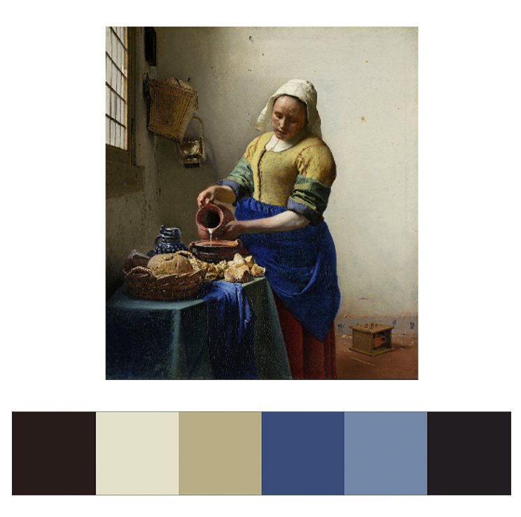

sasha solovyeva
is a digital media maker who balances her career
in creative coding and web dev
with passions for journalism, math, and astrophysics.
about
interdiscipinary work in journalism, visual journalism, field research,
academic research and creative writing that makes me uniquely qualified to bridge the gap
between technical, creative and academic.
(1) <a id="writing"> STRAND-PERCEPTION PARABOLA </a>
(2) <a id="illustrator visualJournalism"> RADIO FREE EUROPE: POLITICS INFOGRAPHICS </a>




< creative code >
(1) mash up like the masters
(2) bike through berlin
(3) southern russia observatory experience
(4) sound of space
(5) a star's life
(6) rijksmuseum artist inspirations
websites, interactive experiences and design work
made for various intents and purposes of the mcc medialab, personal creative ambitions and journalistic fieldwork.
(1) <a id="p5 photoshop museumStudies js"> MASH UP LIKE THE MASTERS </a>
(2) <a id="photoshop html/css jQuery premiere audition"> (IM)MOBILITY IN HARLEM </a>
(3) <a id="illustrator html/css js"> A REIMAGINED COURSE WEBSITE </a>
(4) <a id="illustrator html/css js"> MCC MEDIALAB ARCHIVE </a>
(5) <a id="html/css js"> MCC MEDIALAB WEBSITE </a>
< design and web dev >
(1) mash up like the masters
(2) (im)mobility in harlem
(3) a reimagined course website
(4) mcc medialab archive
(5) mcc medialab website
visual projects exploring ways of applying interactivity to popularize science,
create aesthetically compelling storytelling and inspiration tools.
(1) <a id="p5 photoshop museumStudies js"> MASH UP LIKE THE MASTERS </a>
(2) <a id="p5 gamedev"> BIKE THROUGH BERLIN </a>
(3) <a id="a-frame ar vr astrophysics"> SOUTHERN RUSSIA OBSERVATORY EXPERIENCE </a>
(4) <a id="processing astrophysics"> SOUND OF SPACE </a>
(5) <a id="processing astrophysics"> A STAR'S LIFE </a>
(6) <a id="processing museumStudies api"> RIJKSMUSEUM ARTIST INSPIRATIONS </a>